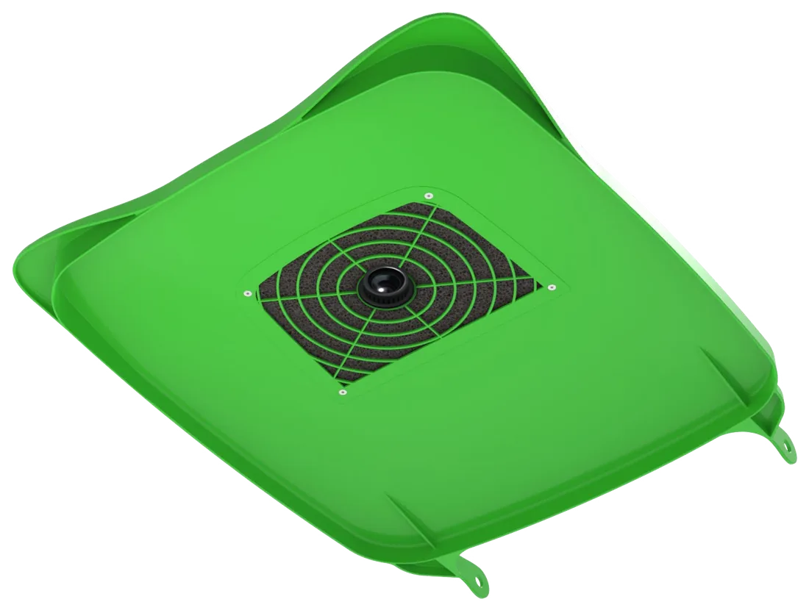
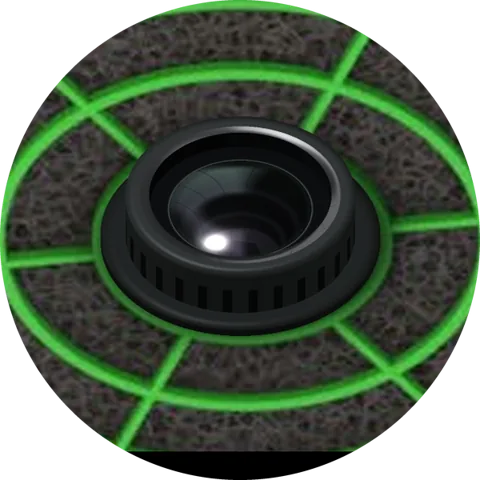
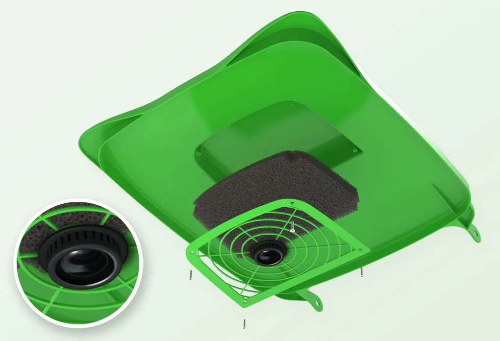
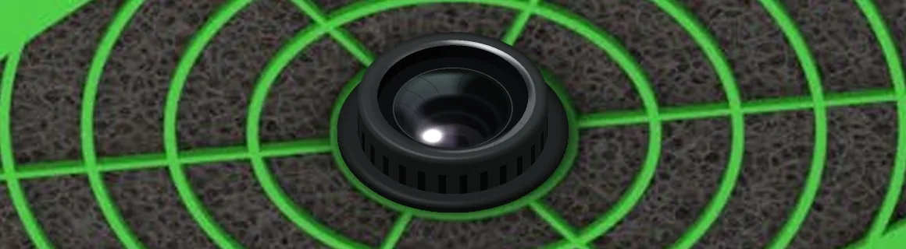
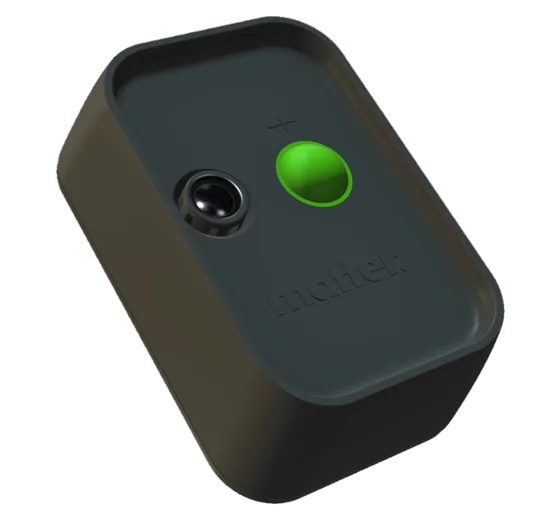
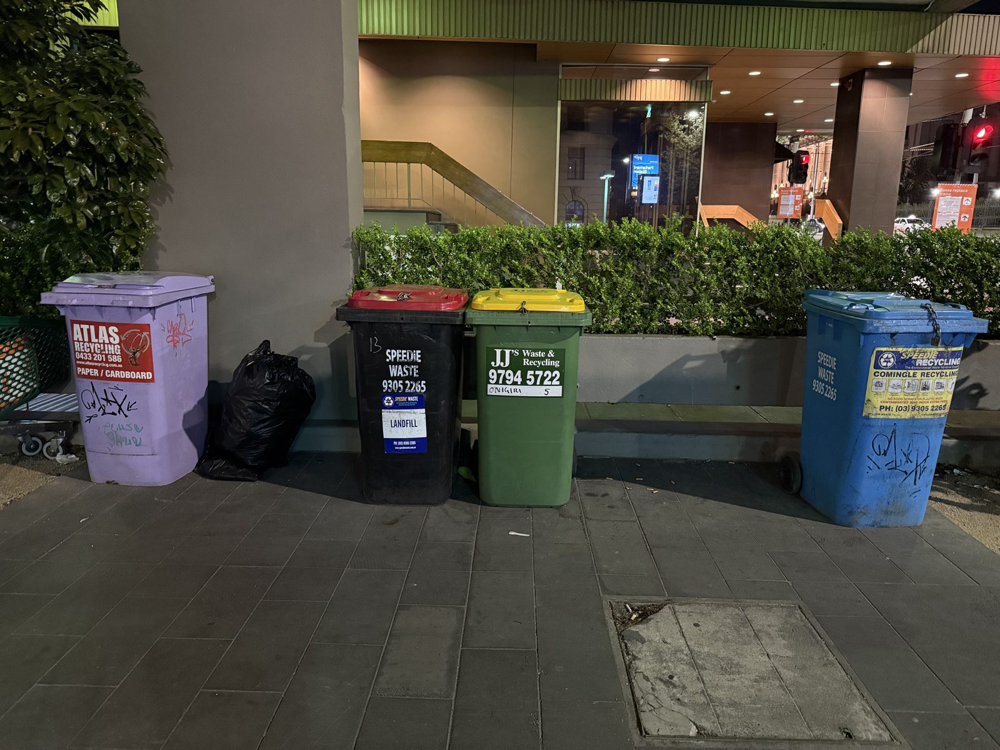
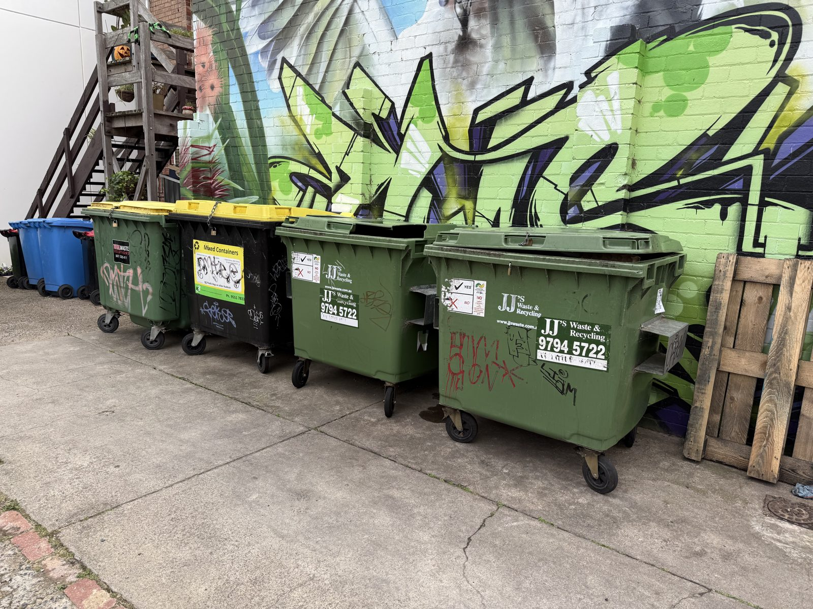

ThinkLid and Park devices on the bins are the core of the system. This demo joins the pieces of the 2027 version of ThinkOS: what a ranger or reseller sees in the field, how that becomes an order, and how resellers grow through loyalty and referrals.
| Bin Map | Free with 5 or more GravityLocks |
| Operations | $99 a month to 250 bins, $190 above |
| Installation | $45 per bin, one visit |
| Reseller onboarding | $199 |
Australian prices, plus GST.
| Australian launch | February 2027 |
| AR/AI reporting glasses | May 2027 |
| United States and Canada | May or June 2027 |
| ThinkLid and ThinkCam | Mid 2027 |
Designed for Australia, New Zealand, Singapore and Malaysia.
| Piece | State | What is simulated |
|---|---|---|
| AR field view | Demo | Fill levels, lock states and run results are invented; the two photos are real Melbourne bins. |
| Reseller agent | Prototype | Clients, orders and stock are samples; lock and sensor prices are sample values; Jev decisions follow rules. |
| Referral program | Prototype | Reward amounts and the 10% discount are placeholders; no email is sent. |
| FAQs | Draft | Eight answers carry placeholders. |
| Database schema and spec | Draft | Held outside this page. |
The 240 L lid that lets a bin report for itself. It swaps onto an existing bin and carries the sensor, the lock and the camera in one moulded part.


One lid body, three openings. Each version fits the same 240 L bin and reports to ThinkOS.
Shred and Bottle images are from the ThinkOS deck of April 2026, shown in the deck's colours. The Eye is seen from below; Shred and Bottle from above.
The module carrier is recycled polypropylene. A lid moulded from river and beach plastic is proposed: see Ocean-plastic ThinkLids.

Illustration with a sample finding. The photo is taken only with the lid shut, so people are never in frame.
All three builds share the housing, camera, flash and ThinkOS link. They differ in where the AI runs and whether the lid carries the odour layer.

Every finding lands in ThinkOS with a confidence score and a time stamp. Fire-risk detections are sent at once on every build.
| Image sensor | 1.5 MP colour, global shutter |
| Field of view | 130 to 140° wide angle; whole bin opening in view |
| Flash | 4 white LEDs for true colour at zero lux |
| Window | Recessed, hydrophobic and anti-fog |
| Position | Lid centre, facing into the bin |
| Wake | Lid close, sensed by a motion sensor |
| Capture | One flash photo once the lid settles |
| Daily cap | Configurable; design point 12 captures a day |
| Supply | One sealed cell, no charging, or the host lid's power |
| Battery life | 2+ years, all builds* |
| Network | Built-in LTE-M / NB-IoT, or the host lid's radio |
| Firmware | Over-the-air updates |
| Fits | ThinkLid 240 L lid; swaps onto existing bins |
| Lock options | Franzen gravity lock or electronic lock |
| Housing | Recycled PP carrier with sealed gasket |
| Temperature | −20 to +85 °C components, for lids in full sun |
| Capture | Lid shut only, facing into the bin |
| Encryption | DTLS with AES-128 in transit; encrypted at rest in ThinkOS |
| Access | Role-based in ThinkOS; image retention configurable |
| Warranty | 12 months, extendable under MatterCare |

* Design targets for pre-release products; they may change. Battery figures assume up to 12 captures a day. Images and figures are from the ThinkLid-Eye datasheet, 10-2026.
One core, five editions. The core is the ThinkLid and Park devices on the bins and the ThinkOS platform that reads them. Each edition reuses both and adds what its setting needs.
| Edition | What it takes from the devices |
|---|---|
| Commercial | Fill for lift-or-skip runs; lifts as proof of service |
| Smart Home | Fill for the three household bins; lid open; emptied |
| Public | Fill on park and street bins; what the ranger sees in the AR view |
| Medical | Lid-open alerts on ward bins; lifts for chain of custody |
| Facility Management | Lifts and fill as the evidence invoices are checked against |
The lid is the one part of ThinkOS that is made of plastic and sits on every bin. Moulding it from plastic recovered from rivers and beaches turns the core device into a second product story: the bin measures waste, and the lid is made from it.
| Area | What could change, and what it depends on |
|---|---|
| Plastic kept out of the sea | Each lid carries a known weight of recovered plastic, so a fleet adds up to tonnes Depends on: lid weight and the recovered share of each lid |
| Coastal communities | Paid collection work where waste services are thin Depends on: a collection program with audited payments |
| Virgin plastic | Less new plastic bought per lid Depends on: how much recovered material the mould can run |
| Tenders | Recycled content to score in council, hospital and facility bids Depends on: certified content, not a marketing claim |
| Sustainability+ reports | A line per client: lids fitted and plastic recovered Depends on: batch data reaching ThinkOS per serial |
| Product passports | Material lineage ready for the 2028 passport work Depends on: serial-level records from the moulder |
| Schools program | SmartLoop schools see the plastic they learn about come back as a lid Depends on: shared supply base in Indonesia |
| Brand | A reason to choose ThinkLid that rival lids do not have Depends on: proof that stands up to scrutiny |
A ThinkLid weighs 1.5 kg. The recovered share is still a placeholder; enter the real figure and the totals update.
The claim will be certified. The scheme is not chosen yet. The closest fit found so far is the Ocean Bound Plastic Certification run by Zero Plastic Oceans, because two of its collection categories match this supply.
| Our source | Matching category in that scheme |
|---|---|
| Rivers | Waterways: plastic in a river or within 200 m of one |
| Beaches | Shoreline: plastic within 200 m of the shore |
Sources: Control Union Indonesia, obpcert.org. Other schemes exist and have not been compared.
Scale, for context: one widely used estimate puts plastic reaching the ocean at about 1.7 million tonnes a year (Our World in Data); an earlier study estimated 4.8 to 12.7 million tonnes for 2010 (Jambeck and others, 2015). Definitions of ocean-bound plastic: UK Committee on Toxicity position paper. Environmental claims need evidence; this is not legal advice.
Horizons follow the waste product roadmap of 8 October 2026. Proposed items have no confirmed date. The Patents tab shows which patent family supports each element.
Three patent families held by Xorro Pty Ltd sit under ThinkOS. The first and broadest protects sensing, crew guidance and the AR view; the two newer ones protect the lid and household bin status.
This is a subject-matter map built from the portfolio overview of 9 October 2026 and the extract of EP 2911954. It is not a legal opinion on claim scope, infringement or freedom to operate. Confirm with IP Sentinels before using it outside Matter.
| System element | Where it appears | Patent support | Strongest status |
|---|
| Edition | What the patents protect there | Families |
|---|
| Territory | Monitoring family | Lid family |
|---|
The bin status family is pending in Australia, Canada and the United States only.
What a ranger, installer or reseller sees through the glasses on a Melbourne laneway run. Each bin is recognised, read and given one action. The run ends in the ThinkOS control centre.


| Today · lift run | ||
|---|---|---|
| 1 | C01 Paper | 88% |
| 2 | C04 Commingle | 93% |
| 3 | C08 General | 95% |
| Issues | ||
| Loose bag at C01 | ||
| C09 lid unlocked | ||
| Bin | Stream | Size | Fill | Lock | Action |
|---|